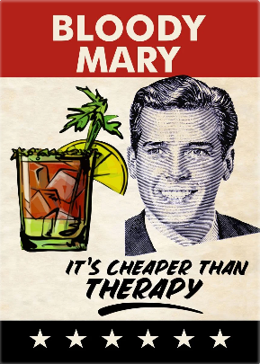

Bloody Mary

A savory, flavory smasher that'll get you going the whole night longgg... or at least till your husband picks you up.
Ingredients
- some ice
- 100ml vodka
- 500ml tomato juice
- 1 tbsp lemon juice
- Worcestershire or 'Wooster' sauce
- Tabasco
- salt and pepper
- 2 celery sticks, to serve
- 2 lemon slices, to serve
Steps
- Place the ice in a large glass. Measure the vodka, tomato juice and lemon juice and pour it straight onto the ice.
- Add 3 shakes of 'Wooster' sauce and Tabasco and a pinch of salt and pepper. Stir until the glass feels chilly.
- Top up with fresh ice, add celery sticks and a lemon slice, and voila!
Return to main page